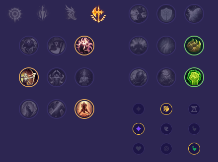

Starter: Pierścień Dorana 2x Mikstura Zdrowia Core Bulid: Zmierzch i Brzask Buty Maga Ząb Nashora Full Bulid: Szczelinotwórca Zabójczy Kapelusz Rabadona Klepsydra Zhonyi

Słaby przeciwko: - Singed - Yone i Yasuo - Illaoi - Akali - Tryndamere - Kayle Dobry przeciwko: - Malphite - Trundle - Gangplank - K'Sante - Renekton - Dr. Mundo